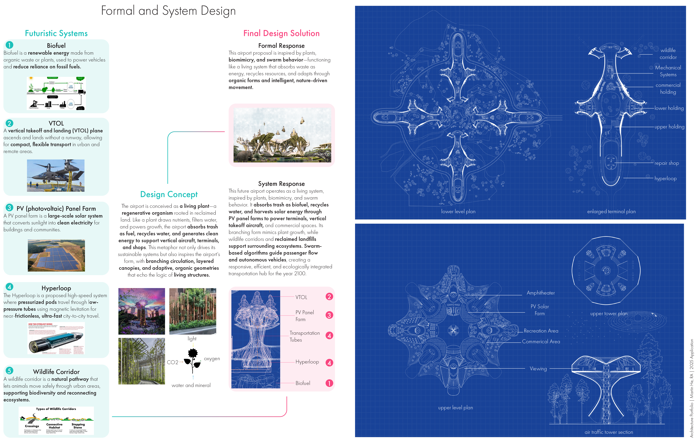
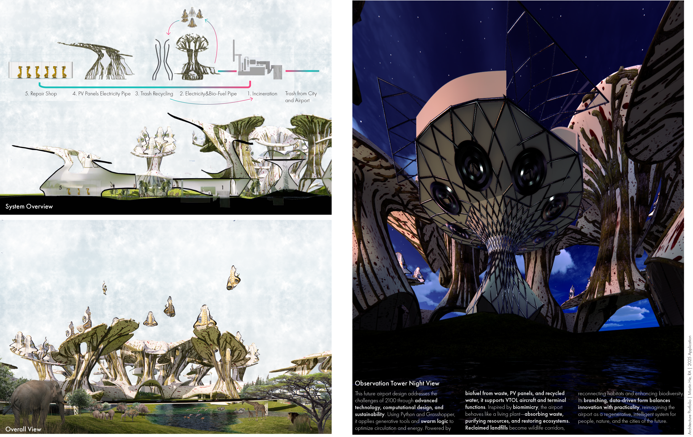

Architecture / Computational Design
Astra
Fentress Global Challenge / Airport of 2100

- Competition
- Fentress 2100 Global Airport Challenge
- Team
- Martin He and Jonathan Liang
- Recognition
- Top 10 finalist
- Tools
- Python, Rhino, Grasshopper
- Project type
- Speculative airport design
An airport conceived as a living system
Astra imagines an airport for the year 2100, bringing computational design together with transportation and ecological infrastructure. Developed with Jonathan Liang, the proposal explores how an airport could participate in the environmental systems around it.
The concept takes inspiration from a plant: branching structures organize movement, layered canopies shelter activity, and interconnected systems exchange energy and resources. Python and Grasshopper support the exploration of these forms and relationships.
{kind=link}

Concept / Energy & Ecology
Closing the resource loop
The proposal links waste-derived fuel, photovoltaic power, and water recycling to the airport's operation. Adjacent landfill sites are reimagined as wildlife habitat, connecting infrastructure with landscape restoration.
These systems form a design ambition for a more regenerative airport, where transportation, energy production, and ecological repair are considered together.
{kind=link}

Design / Movement & Form
New ways of arriving
Vertical takeoff and landing aircraft inform a compact, multilevel terminal concept. Branching circulation and swarm-inspired movement strategies explore how passengers, vehicles, and aircraft could navigate the airport.
The tower, terminals, and landscape are presented as parts of one connected environment. Their organic geometry gives visible expression to the proposal's ecological and computational ideas.